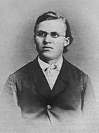
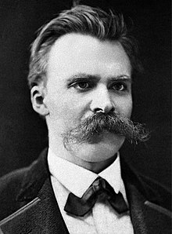

Early Years and Education
Friedrich Wilhelm Nietzsche was born on October 15, 1844, in Röcken bei Lützen, a small village in Prussia (part of present-day Germany). His father, Carl Ludwig Nietzsche, was a Lutheran preacher; he died when Nietzsche was 4 years old. Nietzsche and his younger sister, Elisabeth, were raised by their mother, Franziska. Nietzsche attended a private preparatory school in Naumburg and then received a classical education at the prestigious Schulpforta school. After graduating in 1864, he attended the University of Bonn for two semesters. He transferred to the University of Leipzig, where he studied philology, a combination of literature, linguistics and history. He was strongly influenced by the writings of philosopher Arthur Schopenhauer. During his time in Leipzig, he began a friendship with the composer Richard Wagner, whose music he greatly admired.
Teaching and Writing in the 1870s

In 1869, Nietzsche took a position as professor of classical philology at the University of Basel in Switzerland. During his professorship he published his first books, The Birth of Tragedy (1872) and Human, All Too Human (1878). He also began to distance himself from classical scholarship, as well as the teachings of Schopenhauer, and to take more interest in the values underlying modern-day civilization. By this time, his friendship with Wagner had deteriorated. Suffering from a nervous disorder, he resigned from his post at Basel in 1879.
Literary and Philosophical Work of the 1880s

For much of the following decade, Nietzsche lived in seclusion, moving from Switzerland to France to Italy when he was not staying at his mother's house in Naumburg. However, this was also a highly productive period for him as a thinker and writer. One of his most significant works, Thus Spoke Zarathustra, was published in four volumes between 1883 and 1885. He also wrote Beyond Good and Evil (published in 1886), The Genealogy of Morals (1887) and Twilight of the Idols (1889). In these works of the 1880s, Nietzsche developed the central points of his philosophy. One of these was his famous statement that "God is dead," a rejection of Christianity as a meaningful force in contemporary life. Others were his endorsement of self-perfection through creative drive and a "will to power," and his concept of a "super-man" or "over-man" (Übermensch), an individual who strives to exist beyond conventional categories of good and evil, master and slave.
Decline and Later Years

Nietzsche suffered a collapse in 1889 while living in Turin, Italy. The last decade of his life was spent in a state of mental incapacitation. The reason for his insanity is still unknown, although historians have attributed it to causes as varied as syphilis, an inherited brain disease, a tumor and overuse of sedative drugs. After a stay in an asylum, Nietzsche was cared for by his mother in Naumburg and his sister in Weimar, Germany. He died in Weimar on August 25, 1900.